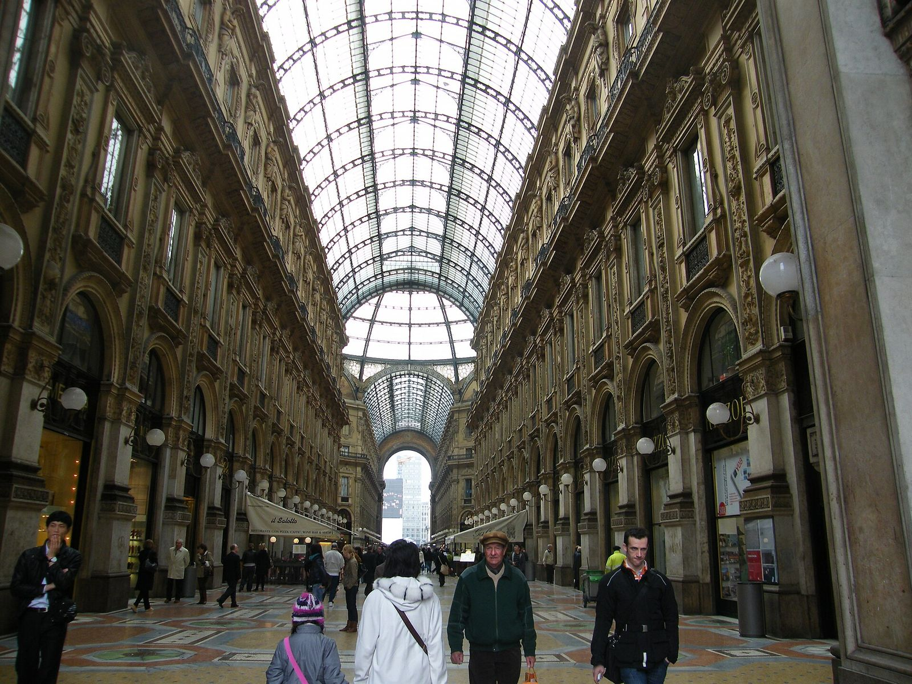
Gli aggettivi
qualificativi
Descrivere l'Italia con stile · Describing Italy in style
Ciao Yasha!
Che cos'è un aggettivo?
What is an adjective?
Un aggettivo qualificativo dice com'è una persona, una cosa o un luogo.
A qualifying adjective says what a person, a thing or a place is like.
L'aggettivo cambia con il nome: maschile o femminile, singolare o plurale.
The adjective changes with the noun: masculine or feminine, singular or plural.
Di solito va dopo il nome: una borsa elegante, un museo famoso.
It usually goes after the noun: an elegant bag, a famous museum.
A volte va prima: una bella città, un grande artista.
Sometimes it goes before: a beautiful city, a great artist.
Anche dopo il verbo essere l'aggettivo cambia: la gonna è rossa, le gonne sono rosse.
After the verb essere the adjective also changes: the skirt is red, the skirts are red.
Gruppo 1 · quattro finali
Group 1 · four endings
| singolare | plurale | ||
|---|---|---|---|
| maschile | femminile | maschile | femminile |
| -o | -a | -i | -e |
È il gruppo più grande. L'aggettivo ha quattro finali: -o, -a, -i, -e.
It's the biggest group. The adjective has four endings: -o, -a, -i, -e.
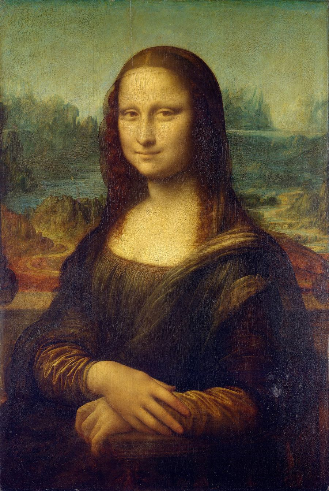
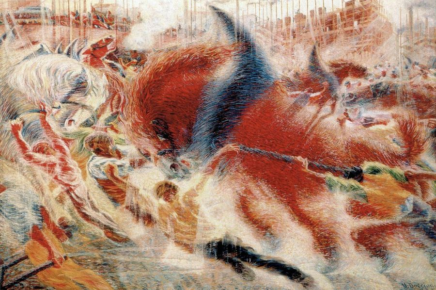
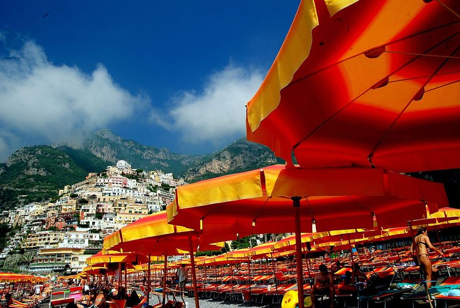
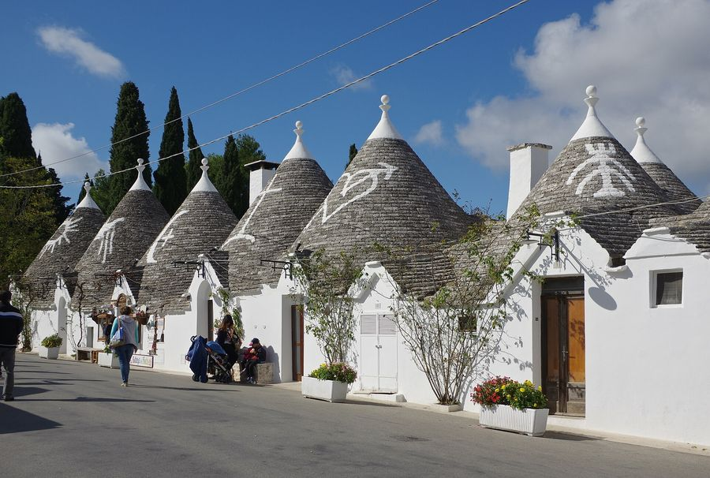
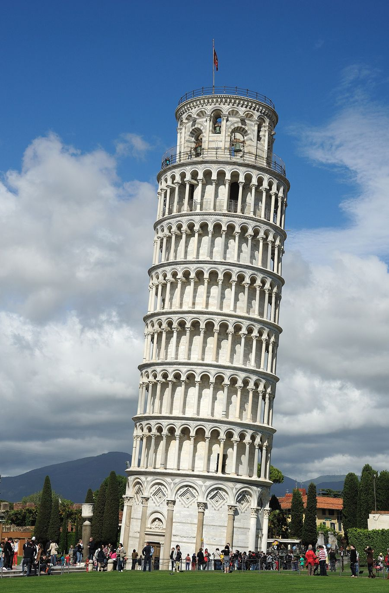
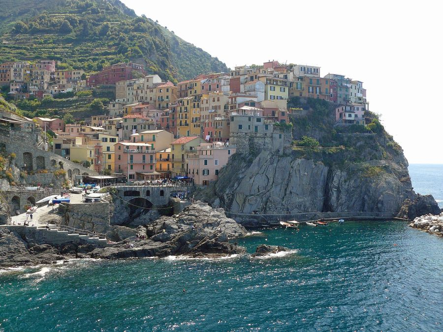
La borsa è ___.
I musei di Firenze sono ___.
Le scarpe sono ___.
Gruppo 2 · tre finali
Group 2 · three endings
| singolare | plurale | ||
|---|---|---|---|
| maschile | femminile | maschile | femminile |
| -a | -a | -i | -e |
Sono pochi aggettivi, quasi tutti in -ista: ottimista, pessimista, realista, entusiasta.
There are few of them, almost all ending in -ista.
Al singolare la finale è -a per il maschile e per il femminile.
In the singular the ending is -a for both masculine and feminine.
Le mie amiche sono ___.
Paolo è ___.
I turisti sono ___.
Gruppo 3 · due finali
Group 3 · two endings
| singolare | plurale | ||
|---|---|---|---|
| maschile | femminile | maschile | femminile |
| -e | -e | -i | -i |
Sono molti aggettivi, tutti in -e.
There are many of them, all ending in -e.
Due finali: -e al singolare, -i al plurale, per il maschile e per il femminile.
Two endings: -e in the singular, -i in the plural, for masculine and feminine.
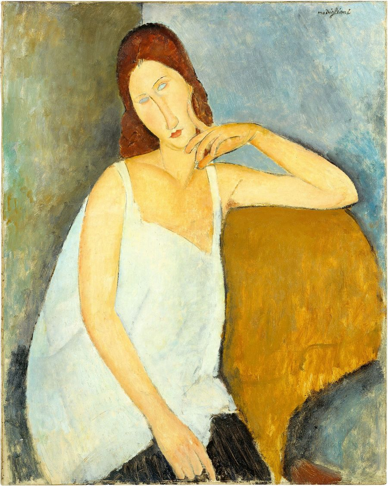
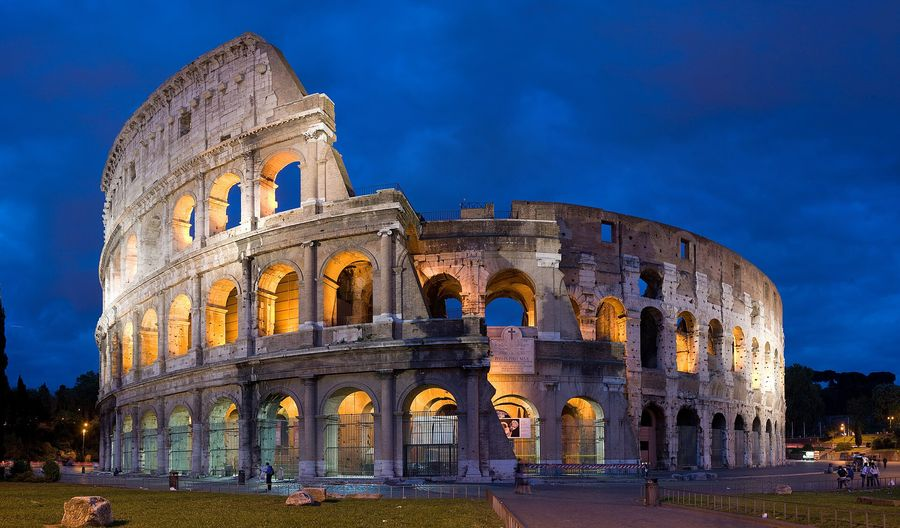
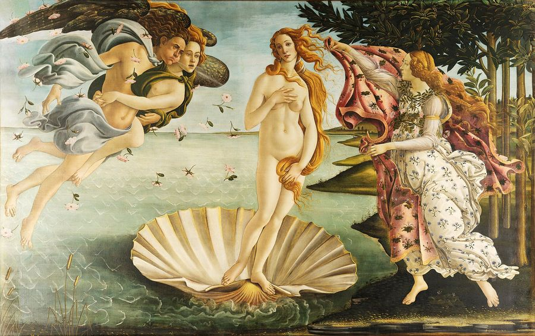
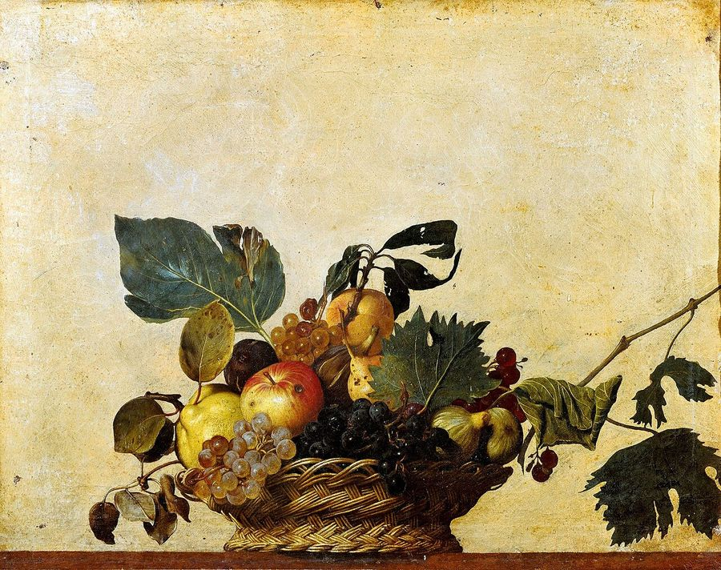
Le borse sono ___.
Roma è una città ___.
I quadri sono ___.
Gruppo 4 · i colori che non cambiano
Group 4 · colours that never change
| singolare | plurale | ||
|---|---|---|---|
| maschile | femminile | maschile | femminile |
| = | = | = | = |
Sono pochi aggettivi e hanno una sola forma: sono invariabili.
There are few of them and they have only one form: they are invariable.
Sono alcuni colori: rosa, blu, viola, beige.
They are some colours: pink, blue, purple, beige.
Ho due borse ___.
I cappotti ___ sono eleganti.
Le sciarpe ___ sono nuove.
Aggettivi in -co, -go, -ca, -ga
Adjectives in -co, -go, -ca, -ga
Gli aggettivi in -co e -go hanno il plurale come i nomi in -co e -go. Conta le sillabe!
Adjectives in -co and -go form the plural like nouns in -co and -go. Count the syllables!
Due sillabe → -chi, -ghi
Two syllables → -chi, -ghi
Più di due sillabe + consonante prima di -co → -chi
More than two syllables + consonant before -co → -chi
Più di due sillabe + vocale prima di -co → -ci
More than two syllables + vowel before -co → -ci
Femminile in -ca, -ga → sempre -che, -ghe
Feminine in -ca, -ga → always -che, -ghe
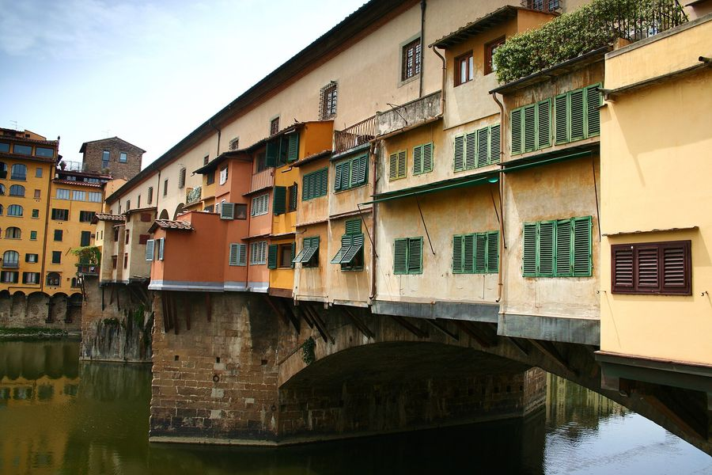
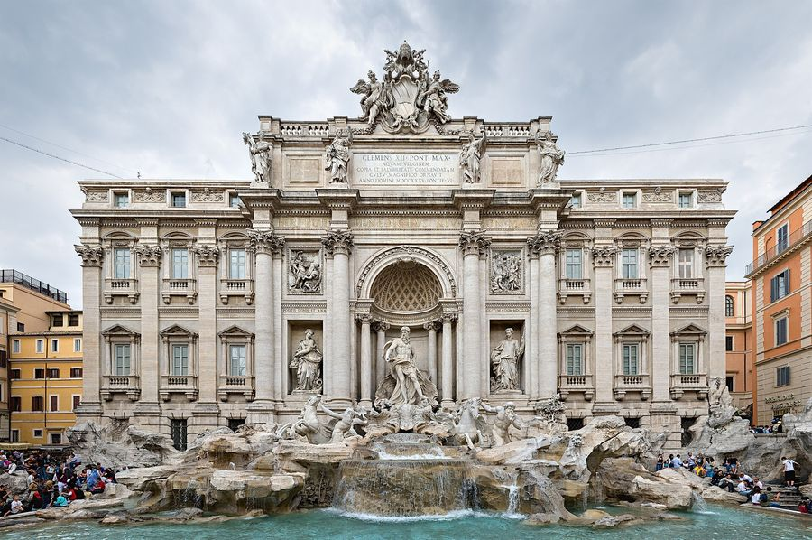
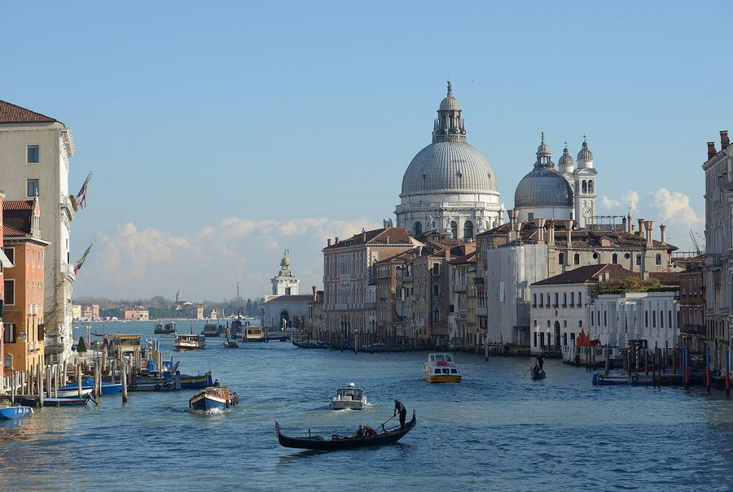
Le gondole sono ___.
Marco e Paolo sono ___.
I miei colleghi sono ___.
Frasi utili
Useful sentences for shopping and travelling
Yasha, scegli la forma giusta.
Choose the right form.
Milano è una città molto ___.
Le Cinque Terre sono ___.
Nel negozio ci sono due cappotti ___.
I miei amici sono ___.
Le strade di Venezia sono ___.
Questi musei sono ___.
Vorrei due borse ___.
I ponti di Firenze sono ___.
Yasha, scrivi il plurale.
Write the plural.
Yasha, in che gruppo è l'aggettivo?
Which group is the adjective in?
Yasha, completa il dialogo in un negozio di Milano.
Complete the dialogue in a shop in Milan.
Yasha, scegli il plurale giusto.
Choose the right plural.
lungo →
stanco →
tedesco →
simpatico →
magnifico →
bianco →
largo →
storica →
pratico →
Yasha, descrivi la foto ad alta voce. Usa due o tre aggettivi.
Describe the photo out loud. Use two or three adjectives.
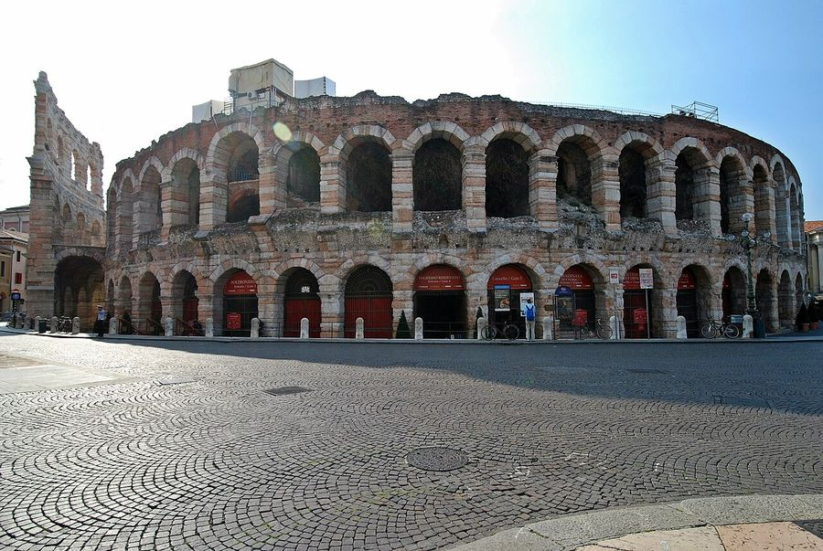
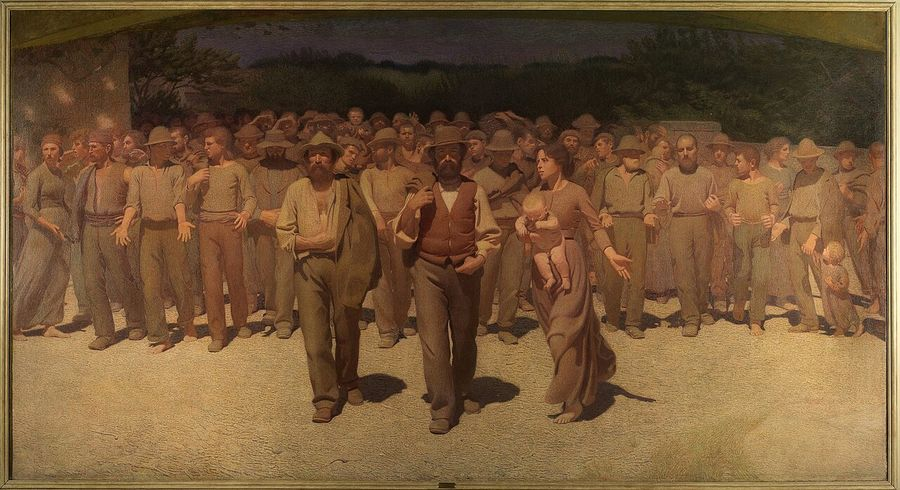
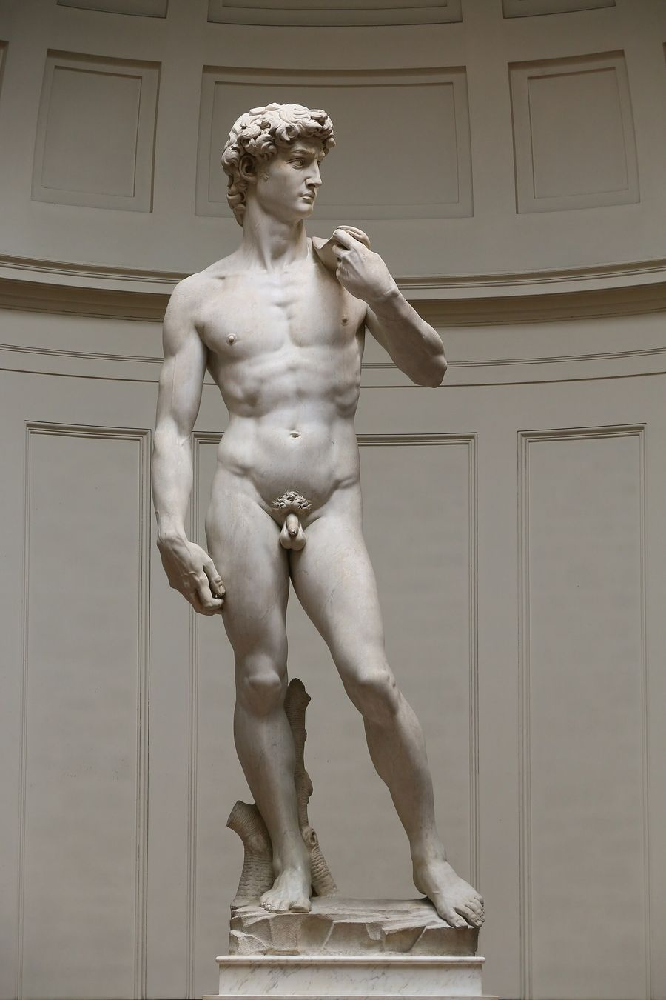
Yasha, descrivi il tuo look di oggi e i tuoi gusti.
Describe your look today and your tastes.
Riassunto
Summary
Il tuo risultato
Rispondi alle domande per vedere il tuo punteggio. Answer the questions to see your score.